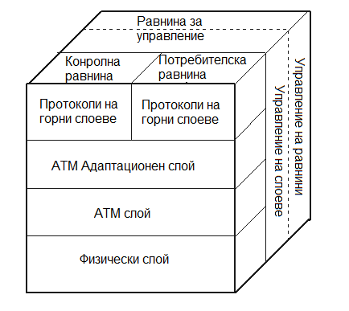
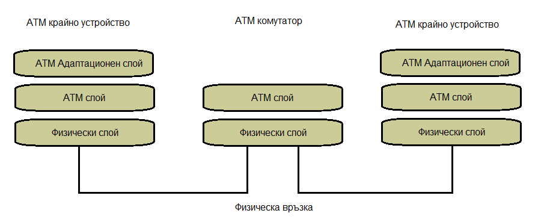

АТМ Нива
Референтният модел на ATM се състои от три основни слоя, илюстриран на Фиг. 1.2. Също така има потребителска равнина (user plane) за прехвърляне на потребителска информация, контролна равнина (control plane) за функции за управление на връзката, и равнина за управление (management plane) за функции за мрежов надзор. Тази равнина може да бъде допълнително разделена на управление на слоеве и управление на равнини.
Фиг. 1.2 Референтният модел на ATM
Физически слой
Този слой съответства на физическия слой на OSI модела. На този слой клетките се превръщат в битови потоци и се предават през физическата среда. Този слой е разделен да два подслоя: подслой PMD (Physical Medium Dependent) и подслой TC (Transmission Convergence).
- PMD посдлой
Подслоят, зависим от физическата среда (PMD) е отговорен за предаването и приемането на отделни битове на физическа среда. Това включва синхронизиране на битове, кодиране на сигнал, взаимодействие с физическата среда и самия кабел или проводник.
ATM не разчита на конкретна скорост на предаване, схема за кодиране или среда, за това съществуват различни спецификации за ATM за коаксиален кабел, екранирана/неекранирана усукана двойка и оптично влакно при скорости, вариращи от 64Kbs до 9,6Gbs. В допълнение, физическата среда може да се разшири до 60 km или повече, използвайки едномодови влакна и лазери с дълъг обхват, така че може лесно да поддържа свързаност в целия кампус и дори частни градски мрежи (MAN). Независимостта на АТМ от определен набор от хардуерни ограничения позволява да бъде реализиран по радио и сателитни връзки. - TC подслой
Подслоят за конвергенция на предаването (TC) функционира като преобразувател между битовия поток на ATM клетките и PMD подслоя. Когато предава, подслойът TC картографира ATM клетките във формата на PMD подслоя (като DS-3 или SONET рамки). Тъй като е необходим непрекъснат поток от байтове, неизползваните части от потока от ATM клетки се „запълват“ от празни клетки. Тези празни клетки се идентифицират в заглавната част и безшумно се изхвърлят от приемника. Те никога не се предават към слоя ATM за обработка.
TC също генерира и проверява полето за контрол на грешки в заглавната част (HEC) за всяка клетка. От страна на предаването, той изчислява HEC и го поставя. От приемащата страна подслоят TC проверява HEC за верификация. Ако една грешка в един бит може да бъде коригирана, битът се коригира и резултатите се предават на слоя ATM. Ако грешката не може да бъде коригирана, клетката се изхвърля безшумно.
Подслоят TC очертава ATM клетките, маркирайки къде започват и къде завършват ATM клетките. Границите на ATM клетките могат да бъдат определени от форматирането на слоя в зависимост от физическата среда или от входящия поток от байтове, използвайки полето HEC. PMD извършва валидирането на HEC на байт на предходните 4 байта. Ако открие съвпадение, следващата граница на ATM клетка е на разстояние 48 байта (съответстващо на paylod на ATM). PMD извършва тази проверка няколко пъти, за да гарантира, че границите на клетката са определени правилно.
ATM слой
Този слой е сравним с калния слой на OSI модела. Той приема сегментите от 48 байта
от горния слой, добавя 5 байтова заглавна част към всеки фрейм и го преобразува в 53 байтови клетки. Този слой е отговорен за
маршрутизирането на всяка клетка, управлението на трафика, мултиплексирането и комутирането.
ATM слоят осигурява функции за мултиплексиране, демултиплексиране и VPI/VCI маршрутизиране (не се разглежда в този документ). Той контролира
потокът от клетки, за да гарантира, че всички връзки остават в рамките на техните договорени граници на пропускателна способност на клетката.
Ако връзките работят извън техните договорени параметри, ATM слоят може да предприеме коригиращи действия, така че неправилните връзки
да не засягат другите връзки.
ATM слоят осигурява последователност на клеткитe от всики източник (от край до край), въпреки това,
ако дадена клетка бъде изпусната от комутатор поради претоварване или повреда, не е отговорност на ATM слоя да коригира изпуснатата клетка
чрез повторно предаване или да уведомява другите слоеве за изпусната клетка. Слоевете над този трябва да усетят изгубената клетка и да решат дали
да я коригират или да я пренебрегнат.
В случай на интерактивен глас или видео, изгубената клетка обикновено се пренебрегва, защото би отнело твърде много време, за да се изпрати повторно
клетката и да се постави в правилната последователност. Значителен брой изпуснати клетки в зависими от времето услуги, като глас или видео, води до накъсано възпроизвеждане
на аудио или видео, но слоят ATM не може да коригира проблема, освен ако за връзката не е посочено по-високо качество на услугата (QoS).
В случай на данни (като прехвърляне на файл), приложението на горния слой трябва да усети липсата на клетката и да я предаде. Файл с липсващи 48-байтови парчета тук и там има повреден файл,
който е неприемлив за приемника. Тъй като операции като прехвърляне на файлове не зависят от времето, съдържанието на клетката може да бъде възстановено чрез забавяне на предаването на файла,
съответстващо на възстановяването на изгубената клетка.
ATM Aдаптационен слой (AAL)
Този слой съответства на мрежовия слой на OSI модела.Той е отговорен за създаването и приемането на 48-байтови полезни товари през долните слоеве
на ATM от името на различни видове приложения Предоставя възможности
на съществуващите мрежи с пакетна комутация, за да се свържат с ATM мрежа и да използват нейните услуги. Той приема данните
и ги преобразува в сегменти с фиксиран размер. Предаванията могат да бъдат с фиксирана или променлива скорост на данни.
Има пет различни типа AAL, но най-често се използва ААL5. AAL5 предоставя начин за неизохронни, променливи
приложения без връзка за изпращане и получаване на данни. AAL5 е разработен като начин за осигуряване на по-ефективен трансфер на мрежов
трафик. AAL5 осигурява ясен кадър в CPCS (Common Part Convergence Sublayer) подслоя,
който се държи повече като съществуващи LAN технологии, като Ethernet.
На Фиг. 1.3 е показана примерна комуникация през слойевете на АТМ. Комутаторите нямат Адаптационен слой. 
Фиг. 1.3 ATM мрежа
<- Структура на АТМ клетка Видове свързване ->